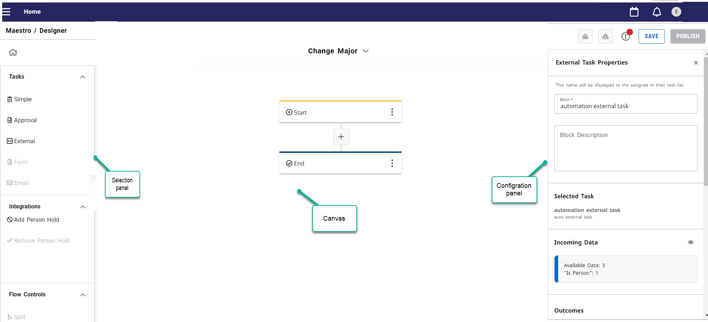
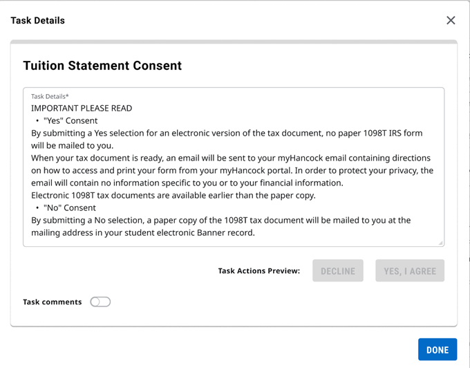

Design Workflows
Concepts
Learn About the Designer
About the Intelligent Processes Designer
Use the Intelligent Processes Designer to design a workflow model by visually mapping each workflow step. The workflow model is a graphical representation of a business process that shows the links and relationships between steps from start to finish.
Creating a workflow model involves mapping a workflow using a view similar to a flowchart. Designer shows steps as boxes labeled with information about that step and transitions from one step to the next as lines connecting the boxes. You can save the workflow as a draft until you publish it.
Some examples of workflows include approving new contracts, procuring goods, and recruiting new staff. These workflows have a clear set of steps from start to finish.
Understand the Designer interface
The Intelligent Processes Designer interface consists of a Selection, Canvas, Configuration panel.
- The Selection panel contains the building blocks that can be arranged on the Canvas to define a workflow. Click Add Segment to display the Selection panel on the Canvas.
- The Canvas provides the working area where you create or edit workflows, change the order of task blocks, and select blocks to configure or view its properties.
- The Configuration panel lets you view and edit block properties you select in the workflow. The Configuration panel displays when you select a block in the Canvas.

Header elements
Intelligent Processes Designer contains elements in the header that you can use for the following operations:
- Click the Alert Notifications icon to display workflow errors and upgrade options.
You can upgrade a published action when the associated Data Connect API pipeline experiences a major version increment, compared to the pipeline version currently in use. To initiate the upgrade process, click Upgrade.
You must resolve all errors before you can publish your workflow. However you can save a draft with existing errors and resolve at a later time.
- Click the Publish button to take your workflow from the draft stage to available for use.
Overview of the Intelligent Processes Home page
On the Home page, you can create, view status, and edit workflows. The Home page updates as you create, edit, and transition workflows from draft stage to published, so the information provided is always current.
After you create a workflow using Designer, the workflow appears in the list on the Home page, with the most recently modified workflow listed on top of the list.
To access the Intelligent Processes Home page, click the Applications icon  in the Experience navigation area and then click Intelligent Processes.
in the Experience navigation area and then click Intelligent Processes.
Each entry on the Intelligent Processes Home page shows the following items:
- Workflow name
- Date on which the workflow was most recently updated (Last Modified)
- Date on which the workflow was created (Created date)
- Current status of the active workflow (Published or Draft)
- Whether an upgrade is available for the workflow
Click the More icon  to change the name or description for a workflow in settings, view the version history for a workflow, and view and schedule a workflow request.
to change the name or description for a workflow in settings, view the version history for a workflow, and view and schedule a workflow request.
Pan and zoom
Larger workflows sometimes require that you use the zoom and pan functions to navigate around the Designer Canvas.
The zoom and pan feature is available for only large workflows that span over the visible part of the Canvas.
You can zoom-in and zoom out on a large workflow process. In large workflows that span over the visible part of the Canvas, you may need to zoom in and out to select the tasks you need. When you select tasks and then zoom in or out, the tasks remain selected.
The minimum zoom percentage available on the Canvas is 20% and the maximum zoom percentage available on the Canvas is 250%. The zoom function always zooms to the center of the Canvas.
Adjust the zoom
There are multiple ways to adjust the zoom.
- Click the + and - buttons in the floating toolbar.
- Use the scroll wheel on your mouse.
On keyboards made for Windows, hold down the Crtl key while you turn the mouse wheel. On keyboards made for Macs, hold down the Cmd key while you turn the mouse wheel.
- Pinch-to-zoom with a trackpad.
Pan and drag
You can pan or drag the workflow to move the visible area of the Canvas vertically. To pan, click on any empty space on the Canvas and drag the view.
Learn About Workflow Elements
Understand tasks and workflows
Learn about the tasks and workflows you can create in Intelligent Processes.
Tasks
A task is defined as a single step of several that guides you through a workflow. A task may require you to provide, review, and decide about workflow information.
Admin users define all of the tasks involved in a business process, and then create an automatic workflow based on what tasks need to be accomplished, who completes those tasks, and in what order the tasks must be done.
Tasks can vary in complexity and time required for completion, such as reviewing submitted paperwork or tracking down documents.
The admin user defines each task to include in a workflow and assigns the workflow tasks to a group of users. A user in the group must take action on the task. Outstanding workflow tasks display in Intelligent Processes Task card on the Experience dashboard.
Workflows
Admin users define workflows and create an automatic workflow based on what tasks must be accomplished, who completes those tasks, and in what order the tasks need to be done.
For example, when an employee needs help to purchase items from vendors the employee initiates a workflow made up of multiple tasks.
For example, an admin user might define the following tasks for a purchase workflow:
- An employee enters information about the purchase request, such as items to be requisitioned.
- A manager reviews the purchase request.
- The purchasing manager enters information on a vendor website to order the requested items.
- Warehouse personnel move purchased inventory for shipping.
When a user in the workflow completes the assigned task, Intelligent Processes sends the next task to the next user and notifies the task is available with details. Intelligent Processes sends each task to each user in the process until complete.
Parts of a workflow
Start and End events
Workflow statuses
Workflows can have several progress statuses.
- Draft
A draft workflow has been created and saved, but not published.
- Published
The workflow has been published.
- Pending
The workflow has been scheduled to start but has not completed yet.
- Active
The workflow is currently being worked on.
- Completed
The workflow has finished successfully, and all its tasks have been executed without any errors or issues.
- Expired/Canceled
The workflow has expired, based on the workflow expiration date, or has been canceled by an administrator.
- Error
The workflow execution encountered an error or failure at some point, preventing it from completing successfully.
Workflow triggers
Workflow errors
A workflow contains a sequence of tasks that flows from the start event to the end event. Occasionally, these tasks can generate errors or exceptions.
Workflow tasks can have a variety of statuses to let you know about the workflow’s progress. Tasks with the following statuses are considered terminated tasks upon which no further action is allowed.
- Expired/Canceled
Tasks expire when not completed by the defined workflow due date. You cannot take action on an expired task. The action button is disabled.
- Error
When an assigned task is in error, it cannot be recovered. You cannot take action on a task that is in error. The action button is disabled.
Intelligent Processes Features
Create Workflows
Workflow triggers
Configure Start and End blocks for a workflow
A workflow contains a single Start event and a single End event. The Start event marks the beginning of the workflow’s task sequence, while the End event signals its completion.
About this task
When you create a workflow, Designer automatically adds the Start and End blocks to the workflow and assigns the default names Start and End.
Configure the Start block
You can configure the Start block to initiate the workflow based on a schedule, a manual action, or an external trigger such as an API call or form submission.You can change the name, provide a description, and set parameters related to the start of the workflow.
Procedure
Configure the End block
The End block is where the workflow formally ends, meaning no further tasks or events will occur after this point. You can change the name, provide a description, choose an alternative workflow outcome to display, enable Experience notifications, and configure email notifications related to the workflow’s completion.
Before you begin
You can configure the end block to send email notifications to inform workflow participants and other stakeholders about workflow completion. The email content is automated and cannot be customized.
- You must specify the administrative users who can add and manage email domains for authentication and verify sender email addresses. See Grant Email Settings configuration permissions for instructions.
- You must define and verify an email address before a user can use it to send emails. See Set up sender emails for instructions.
- You must add a default email address and verify it so that you can use it to send communications. See Default email for information.
About this task
- school, marked primary preferred
- school, not marked preferred
- personal, marked primary preferred
- anything else marked primary preferred
- personal, not marked preferred
- anything else
Procedure
Create scheduled workflow
Learn how to create a workflow triggered by a schedule.
Procedure
-
Click the Applications icon in the Experience navigation area and then click Intelligent Processes.
The Intelligent Processes Home page appears.
What to do next
Schedule the start of this workflow after you publish your workflow. See Create a workflow schedule for instructions.
Create API-driven workflow
Learn how to create a workflow triggered by an API.
Before you begin
-
An Experience extension must already exist before you can use the API trigger feature in Intelligent Processes. See Invoke BPAPIs through the Ethos proxy service using OAuth tokens (elluciancloud.com) to learn how to configure your form to invoke the Start API in Intelligent Processes.
API triggers can be called from any form in Banner or Colleague, any WebForm that can call the Start API, and from a custom card in Ellucian Experience that serves as a Form.
- For users to initiate API-driven workflows, you must assign the Execute permission to the relevant role or user. However, you can only assign this permission after creating the API-driven workflow. See Set up workflow permissions for information on how to set up permissions for the Intelligent Processes application.
Task 1: Name the workflow and select the API authentication type
The workflow name that you specify displays in the Task List for assigned users. Use a name that matches the business process so users can choose the right task.
Procedure
-
Click the Applications icon in the Experience navigation area and then click Intelligent Processes.
The Intelligent Processes Home page appears.
Task 2: Configure the start properties
Map form inputs to API parameters in the Start block and review authentication settings.
Procedure
Task 3: Add workflow tasks
Add and configure tasks that run based on the submitted form data.
Before you begin
Procedure
Task 4: Configure the end properties
Open the End block and set properties for the API-driven workflow.
Procedure
Task 5: Save or publish workflow
You can save a draft and publish later. Drafts can contain validation errors, but you must fix them before publishing.
Procedure
- Click Save to save a draft and publish later. You can save with validation errors, but you must fix them before publishing.
- Click Publish to make the workflow available for use.
Create form driven workflow
Learn how to create a workflow triggered by a form. You can call the form trigger from any form created with the Ellucian Forms application.
Before you begin
- A form must already exist and be in the published state before you can use the form trigger feature in Intelligent Processes. See Configure forms to learn how to create a form using the Ellucian Forms app.
- For users to initiate form-driven workflows, you must assign the Execute permission to the relevant role or user. However, you can only assign this permission after creating the form-driven workflow. See Set up workflow permissions for information on how to set up permissions for the Intelligent Processes application.
Task 1: Name the new workflow
The workflow name that you specify displays in the Task List for assigned users. Make sure to enter a workflow name that is contextualized to the business process you are modeling so that, in the Task List, users efficiently pick the right task to do.
Procedure
-
Click the Applications icon in the Experience navigation area and then click Intelligent Processes.
The Intelligent Processes Home page appears.
Task 2: Configure the start properties
Click the Start block to open its properties panel and configure the properties for the form.
Procedure
Task 3: Add workflow tasks
Configure the workflow to perform workflow tasks based on the form data submitted.
Before you begin
Procedure
Task 4: Configure the end properties
Click the End block to open its properties panel and configure the properties for the form.
Procedure
Task 4: Save or publish the workflow
You can save a draft of your workflow and publish later. You can save the draft with validation errors, but you must resolve the errors before you can publish.
Procedure
- Click Save in the header to save your workflow draft and publish later.
You can save your draft with validation errors, but you must resolve the errors before you can publish.
- Click Publish in the header to make the workflow available for use.
Connect custom form to the Start API
Configure your custom form to invoke the Start API by following the instructions described in Invoke BPAPIs through the Ethos proxy service using OAuth tokens (elluciancloud.com).
Code Example
const { authenticatedEthosFetch } = useData();
const startWorkflow = (body: any) => {
const args =
{
options: {
method: 'POST',
headers: {
Accept: 'application/vnd.hedtech.integration.v1+json',
'Content-Type': 'application/vnd.hedtech.integration.v1+json'
},
body: JSON.stringify(body)
},
resource: 'workflow-instances'
};
authenticatedEthosFetch(args.resource, args.options)
.then((response: { json: () => any; }) => response.json())
.then(async (result: { ok: any; json: () => any; }) => {
if (result.ok) {
return result.json();
}
throw await result.json();
})
.catch((err: any) => {
throw handleError(err);
});
};Troubleshoot upload errors
The workflow upload process incorporates validation checks to ensure that the structure of the YAML file aligns with the requirements for rendering a viable workflow.
Review the following validation errors that you might encounter when uploading a YAML file in Intelligent Processes.
| Validation Error | What to do |
|---|---|
| Non-unique workflow name | Make sure the uploaded YAML file has an unique name for the workflow. |
| Missing workflow name | Make sure the uploaded YAML file has a designated name for the workflow. |
| Character limits exceeded | Make sure the block name and workflow name are no more than 50 alphanumeric or special characters. Make sure the block description and workflow description are no more than 4000 alphanumeric or special characters including spaces. Make sure the task outcome description is no more than 4000 alphanumeric or special characters including spaces. |
| Start block is not first More than one Start block Start type block missing Start type block not valid |
|
| End block missing | Make sure to conclude your workflow with a single End block, signifying the endpoint of the entire workflow. Place the End block as the last element in your workflow sequence. This standardizes linear workflows. In cases where your workflow involves splits, make sure that the End block is the final element within each specific sequence. |
| End block is not last | The End block must be the last block in your YAML file using the In and Out attributes. |
| More than one End block without split controls in the workflow | Include only one End block in the YAML file for a workflow that does not include Split controls. |
| Split ends | There are too few or too many End blocks compared to the number of split paths in the workflow. Make sure that for each split path, there is a corresponding block to handle it, and all paths ultimately lead to the End block. Adjust the number of split paths and corresponding blocks as needed for your specific workflow. |
| Missing block between the Start and End blocks | A workflow must include at least one block between the Start block and End block. |
Missing In for each block except Start |
Make sure to specify the In section for each block in the YAML file except the Start blockThe These |
| Missing Out block except End | Make sure to specify the Out section with each block in the YAML file except the End blocks. The Out section identifies the subsequent block that follows the current one in the workflow. These In and Out sections serve to establish a clear order and connection between blocks, ensuring the proper order of blocks within your workflow. |
| Orphaned blocks Multiple Ins and Outs for a block detected |
Each block in the YAML file is restricted to having only one In section and one Out section. Only split blocks are allowed to have multiple |
| Non-unique blocks | Each In section and Out section in the YAML file must be unique and correspond to the block ID to maintain a clear and unambiguous structure. This ensures that connections between blocks are uniquely identified and accurately represent the flow of the workflow. |
| Block type not supported | Make sure the block types specified in the YAML file correspond to the available block types within Intelligent Processes. Class types specified in the YAML file must match the block name and casing in Intelligent Processes. Some block types might be disabled based on feature flags. Access to certain block types may be restricted by licensing. Users with specific licenses or permissions may have access to a broader set of block types compared to others. |
| Unavailable Action or External Task | When the YAML file references an action or external task within the workflow, it is imperative to have already created the corresponding action or external task in Intelligent Processes. See Create custom actions and Create an external task for instructions. |
| Non-unique IDs used for blocks Missing block IDs |
Every workflow block specified in the YAML file must contain a unique identifier, and no block should be missing a block ID. |
| Block class IDs are not valid | A valid block has a class ID in the following format: blockClass_validGuid.Make sure class IDs do not contain spaces or special characters except for hyphen and underscore. |
| Action or External Task upgrade | If the YAML file references an older version of an action or external task compared to what is available in the tenant, an automatic upgrade to the latest version is initiated. |
| Invalid configuration input | Invalid configuration inputs, such as setting due_in beyond the allowed limit, result in an upload error. Modify the block names, values, and other properties based on the specific requirements in Intelligent Processes. |
| YAML structure not valid | Make sure you adhere to the YAML syntax and structure guidelines to create valid YAML documents. |
Track workflow status
About My Requests
The My Requests option allows you to view workflows you have initiated, whether started by a form or an API trigger. It provides a summary of your workflow activity, keeping you informed about your requests.
The My Requests page displays all your submitted workflows and lets you filter them by the following details:
- Request ID
- Workflow name
- Start date and End date
- Status
Each workflow request displays the associated request ID, making it easy to reference specific workflow submissions.
Request cancellation
If enabled, you can cancel workflows that are still in a Pending state. This option is only available for:
- Form-triggered workflows
- API-triggered workflows
- Workflows you initiated
Cancellation logs include who canceled the request and when the cancellation occurred.
Custom workflow statuses
Admins can configure workflow outcomes beyond the default settings. By default, the overall status is marked Complete or reflects the outcome of the last task. However, admins can define custom statuses using the end block of the workflow.
Track workflow status and history
Use the My Requests page to track the real-time status and progress of your workflows, including timestamps, status updates, and key events.
Before you begin
You can only track the progress of workflows that you started using a form trigger or an API start trigger.
Procedure
Add Simple Task
About simple tasks
Use the simple task type wherever a part of your workflow process has to be executed manually.
A simple task consists of details and actions assigned to users within a workflow. Details are the set of instructions to be performed by the user assigned to the Simple task. Actions are the buttons that the user must select to complete the Simple task.
You can configure up to two action buttons for a Simple task. A user selects only one of the action buttons to complete the task.
For example, if you are configuring a workflow for a user to acknowledge notifications, such as a Tuition Consent Statement, the user who is assigned to the Simple task sees the task name on their Task List page. The user can then click the task name to view the Task Details, which describes the actions the user must take to complete the task.
As shown in the following image, the action buttons to select on the Tuition Statement Consent are either Decline or Yes, I Agree. After a user selects one of the action buttons, the Simple task moves to a Complete status.

Add simple task
The Intelligent Processes Designer application provides a configuration panel that presents the properties for the currently selected task block. For some blocks, such as a simple task, you are required to configure its properties to complete the workflow.
Task 1: Add and name the simple task
The task name is the title that appears in the Task List for the assigned users.
Procedure
-
In the Simple Task Properties panel, complete the following fields:
Field Description Block Optionally, you can modify the default name for the task block. The name can be up to 50 alphanumeric or special characters. The block name that you enter for the simple task appears in the Task List for assigned users. Make sure you enter a name that is meaningful so that, in the Task List, users efficiently pick the right task to do.
Block Description Optionally, you can provide a description for the task to be completed. The description can be up to 4000 characters, which includes letters, numbers, and spaces. Use the rich text editor for formatting, such as bold, italic, or underlined text. Use the hyperlink icon to input URLs, make sure to include
https://orhttp://. Keep in mind that HTML in the editor counts towards the 4000-character limit.Click the Ask AI
 icon to get help from the Ellucian Gen AI Writing Assistant in creating or editing content. See Use the AI Writing Assistant in Intelligent Processes for details. The Ask AI icon is visible in the rich text editor toolbar to users who have been granted access to the AI Writing Assistant by an administrator at your institution.
icon to get help from the Ellucian Gen AI Writing Assistant in creating or editing content. See Use the AI Writing Assistant in Intelligent Processes for details. The Ask AI icon is visible in the rich text editor toolbar to users who have been granted access to the AI Writing Assistant by an administrator at your institution.Task Display Name Optionally, you can enter a display name for the task to be completed. If configured, the display name overrides the default block name for tasks. The task display name appears in the Task List for assigned users and in emails and notifications.
Additionally, you can use process data to personalize the task display name.
Task 2: Add task actions and assign task
Simple tasks consist of instructions and action buttons that an assignee must complete to finish the task.
Procedure
Task 3: Specify when the simple task is due
Specify how much time the assignee has to complete the simple task.
Procedure
Task 4: Configure email notifications
Intelligent Processes uses email notifications to notify assignees and other workflow participants about task assignments and outcomes. The email content is automated and cannot be customized.
Before you begin
- You must specify the administrative users who can add and manage email domains for authentication and verify sender email addresses. See Grant Email Settings configuration permissions for instructions.
- You must define and verify an email address before a user can use it to send emails. See Set up sender emails for instructions.
- You must add a Default Email Address and verify it so that you can use it to send communications. See Default email for information.
About this task
- school, marked primary preferred
- school, not marked preferred
- personal, marked primary preferred
- anything else marked primary preferred
- personal, not marked preferred
- anything else
Procedure
Add Email block
Add email block
Learn how to add an Email block to your workflow that specifically sends an email notification to designated recipients.
About this task
- school, marked primary preferred
- school, not marked preferred
- personal, marked primary preferred
- anything else marked primary preferred
- personal, not marked preferred
- anything else
Only one email notification can be sent per Email block, but it can include multiple recipients.
Procedure
-
Click the Applications icon in the Experience navigation area and then click Intelligent Processes.
The Intelligent Processes Workflows page appears.
Add Form Task
About form tasks
Use the form task block to assign a form submission task to another user within the workflow.
The form task block provides comprehensive configuration options, enabling task assignees to search for and populate form data, set notifications, and manage task progression with specific actions.
The associated form version remains consistent until manually updated by the user. If a new version of the form is available, the Admin will be notified to decide on upgrading and republishing the form.
Add form task
Form tasks leverage the Ellucian Forms application to capture and manage information efficiently within a workflow. The form task block is used at designated points in a workflow to prompt users to enter specific information. See the Forms documentation for information on the Forms app.
Task 1: Add and name the form task
The task name is the title that appears in the Task List for the assigned users.
Procedure
Task 2: Populate form fields
Populate form fields using data tags. If any form field contains sensitive data, it may appear as disabled or read-only. These fields cannot be mapped to process data for security reasons.
About this task
- Use consistent data types: Double-check that each form field is mapped to process data of the same type.
- Map only relevant data: Avoid mapping unnecessary data to keep the form simple and focused on essential information.
Procedure
Add Approval Task
About approval tasks
An approval task refers to a specific step that requires authorization or sign-off from one or more individuals before proceeding to the next step in the workflow.
Process flow for adding an Approval task to your workflow
- Build an approval request page
Create a page where the approver can review and complete the approval request. Include relevant information about the request, such as details and specific instructions or guidelines.
- Define task outcomes
Specify the actions the approver can take when reviewing the approval request. For example, the approver can approve a task, deny a task, or take a custom action.
- Assign approvers (API-triggered workflows only)
Determine the individuals responsible for reviewing and approving the request. For schedule-triggered workflows, the Assignee field defaults to Started For.
- Set due dates
Specify how much time the assignee has to complete the approval task.
- Enable automated notifications
Choose to send notifications to the Assignee when the task is assigned and if it becomes overdue.
- Insert split flow control
After configuring the approval task, you can choose to insert a Split flow control to enable the workflow to proceed differently based on the task outcome selected by the approver.
Add approval task
Use the approval task to build a page for an approver to view and complete, and then perform an action such as approving it, or denying it, or a custom action that you define.
Before you begin
Task 1: Add and name the approval task block
The approval task name appears in the Task List for the assigned users, allowing easy identification of the task without needing to view the details.
Procedure
-
In the Approval Task Properties panel, complete the following fields:
Field Description Block Optionally, you can modify the default name for the approval task block. The name can be up to 50 alphanumeric or special characters. The block name that you enter for the approval task appears in the Task List for assigned users. Make sure you enter a name that is meaningful so that, in the Task List, users efficiently pick the right task to do.
Block Description Optionally, you can provide a description for the approval task. The description can be up to 4000 characters, which includes letters, numbers, and spaces. Use the rich text editor for formatting, such as bold, italic, or underlined text. Use the hyperlink icon to input URLs, make sure to include
https://orhttp://. Keep in mind that HTML in the editor counts towards the 4000-character limit.Click the Ask AI
icon to get help from the Ellucian Gen AI Writing Assistant in creating or editing content. See Use the AI Writing Assistant in Intelligent Processes for details. The Ask AI icon is visible in the rich text editor toolbar to users who have been granted access to the AI Writing Assistant by an administrator at your institution.Task Display Name Optionally, you can enter a display name for the approval task. If configured, the display name overrides the block name for the approval task. The task display name appears in the Task List for assigned users and in emails and notifications.
Additionally, you can use process data to personalize the task display name.
Task 2: Design the approval request page
The approval page is where an approver responds to an approval request. You can customize which fields appear on the approval page and in which order.
Procedure
Task 3: Add approval actions and assign task
Approval tasks consist of action buttons that an approver uses to finish the task. You can modify the default labels (Approve and Deny) that your approvers will use when they respond to an approval request. You will also want to identify the approvers to assign to the approval task.
Procedure
Task 4: Specify when the approval task is due
Specify how much time the assignee has to complete the approval task.
Procedure
Task 5: Configure email notifications
Intelligent Processes uses email notifications to notify assignees and other workflow participants about task assignments and outcomes. The email content is automated and cannot be customized.
Before you begin
- You must specify the administrative users who can add and manage email domains for authentication and verify sender email addresses. See Grant Email Settings configuration permissions for instructions.
- You must define and verify an email address before a user can use it to send emails. See Set up sender emails for instructions.
- You must add a Default Email Address and verify it so that you can use it to send communications. See Default email for information.
About this task
- school, marked primary preferred
- school, not marked preferred
- personal, marked primary preferred
- anything else marked primary preferred
- personal, not marked preferred
- anything else
Procedure
Create Approval Groups
Create approval groups
An approval group is a list of individuals responsible for reviewing and approving certain actions, requests, or processes within a workflow.
Before you begin
Procedure
-
Click the Applications icon in the Experience navigation area and then click Intelligent Processes.
The Workflows page appears.
Add External Task
About external tasks
The External Task feature enables you to carry out a task within an application that operates on the Experience platform, distinct from Intelligent Processes.
External tasks function similarly to simple tasks and approval tasks. When you add an external task to a workflow, that task is linked to an application that exists outside of the Intelligent Processes environment. After an external task is assigned, a notification is sent to the designated assignee task list in both the Experience platform and in Intelligent Processes.
Task notifications guide you to a specific page within the Experience platform, but this page is situated within an external application, separate from Intelligent Processes. Consequently, you can complete the assigned task by using your chosen external application.
After you complete an external task, the external application sends a confirmation to Intelligent Processes that the task is complete. The external task configuration is effective when you first create the external task, guaranteeing that all the essential settings are correctly set up.
The behavior of the external application when you access a task that is already marked as complete is determined by the external application. The features of the external task govern choices like locking down the task, displaying task list results, allowing resubmission, or similar actions, not by the functionality of Intelligent Processes.
External task to verify contact details
You can add an external task to verify the user contact details using the Person Manager Verify Contact Information page.
To ensure accuracy in contact details, you have the option to incorporate an external task for confirming the contact details through the Person Manager Verify Contact Information page.
- Confirmation alerts
Person Manager administrators can set up alerts prompting users to confirm their contact information periodically.
- Automatic triggering
You can integrate the verification of contact details as an external task within a Intelligent Processes workflow. Intelligent Processes automatically initiates the Verify Contact Information Experience page as required.
- Customizable verification
Person Manager administrators can tailor which specific contact details require verification. See Configure the Verify Contact Information page for instructions.
- User interaction
You can check your contact information on a dedicated Experience page. You can then confirm that the information is correct or update this information if required. See Verify Contact Information for instructions.
Set up required permissions
To integrate the verification of contact details as an external task within Intelligent Processes, make sure the following permissions are configured correctly:
- Access Permissions
Users must be granted the Applications menu—Access permission for Person Manager in Experience, either through their role or user ID. This permission enables access to the configuration settings for Person Manager using the Applications menu within Experience.
- Verification Permissions
Users need both the Person Manager Verify Contact Information—Read and Verify Contact Information—Update permissions assigned to their role or user ID. These permissions allow users to view and modify configuration settings for Person Manager using the Verify Contact Information tab on the corresponding configuration page in Experience.
- Ellucian External Task Permissions
Additionally, users must be granted the Ellucian External Tasks—Use permission for any specific external task they want to incorporate into their workflow, such as Verify Contact Information. This permission is crucial for enabling the use of external tasks within Intelligent Processes.
User permissions are created and managed through the Experience Setup application. See the Set up workflow permissions topic for information on how to set up permissions for Intelligent Processes.
Create an external task
Learn how to create and configure actionable tasks and complete an external task.
Before you begin
Procedure
-
Click the Applications icon in the Experience navigation area and then click Intelligent Processes.
The Intelligent Processes Workflows page appears.
Complete an external task
The external task completion process uses the Workflow External Tasks API to notify Intelligent Processesthat the external task is complete and provides the outcome and any output data.
Before you begin
You need an authenticated Ethos token to make the API calls for the user completing the task. Use Authenticated Ethos Fetch to retrieve the token before calling the Intelligent Processes endpoints, as it is required for both retrieving and completing external tasks.
For detailed instructions on obtaining the token, refer to Invoke BPAPIs through the Ethos proxy service.Procedure
Add an external task to the workflow
Add Split Control
About split flow controls
Split flow controls help build intelligent workflows that can branch based on task outcomes or detailed process conditions. It functions like an "if-then" or "switch-case" structure that enables more dynamic and adaptable workflows.
Split behavior
A split’s behavior depends on the block that comes before it:
- After a block with defined outcomes (such as a simple task or approval task), the split evaluates the task’s outcome, such as Approved or Rejected, to decide the path. Each task outcome maps to its own path.
- After other blocks, the split evaluates the process data, such as form inputs or workflow variables, to decide which path to follow.
In both cases, a default path is automatically created and is used when none of the conditions are met.
Number of paths
- If you have Automation and Experience Premium, you can create up to 10 total paths—nine condition-based and one default.
- If you have Tasks and Holds with Experience Premium, you are limited to two paths—one condition-based and one default.
Path conditions and logic
Splits can be customized to use conditional logic. Each path must have its own unique conditions. You cannot use the same logic in more than one path. You can also use task outcomes as conditions.
- With Automation and Experience Premium users can add multiple conditions to a path, use AND/OR logic, and reorder both paths and conditions within the split.
- With Tasks and Holds with Experience Premium users can define only one condition per path. Advanced logic (combining conditions, nesting splits, reordering) is not available.
If multiple path conditions are met, the workflow uses the first matching path based on priority. If no conditions are met, the default path is used.
Path priority
- With Automation and Experience Premium, paths are prioritized from 1 to 10, evaluated from left to right. You can reorder them as needed.
- With Tasks and Holds with Experience Premium, the path order is fixed and cannot be changed.
The 10th path (in Automation and Experience Premium) or the second path (in Tasks and Holds with Experience Premium) is always the default and is created automatically.
Nesting and complexity
- Only Automation and Experience Premium supports nested splits, allowing complex, multi-layered condition trees.
- Tasks and Holds with Experience Premium does not support nested or recursive splits.
Supported data types
The available data types and operators for split flow controls depend on your license type.
| Data Type | Supported Operators |
|---|---|
| Boolean | Equals, Blank |
| Date/Time | Equals, Between, After, Before, Within the last, More than, Blank, Execution Date (Current Date), Exact Value |
| Number | Equals, Greater Than, Less Than, Greater Than or Equal, Less Than or Equal, Blank, Exact Value |
| Person | Equals, Blank, Exact Value |
| String | Contains, Equals, Blank, Exact Value |
| Data Type | Supported Operators |
|---|---|
| String | Equals |
Add a split flow control
Use a split block in your workflow to route the flow based on defined conditions. Each path in the split block evaluates a condition, and only the first path that meets its condition is followed. If no conditions are met, the workflow continues on the default path.
About this task
The available functionality for split flow controls depends on your license type. Full functionality requires both Automation and Experience Premium licenses. If you have only the Tasks and Holds with Experience Premium, you can still use split flow controls, but with the following restrictions:
| Capability | Restriction |
|---|---|
| Maximum number of split paths | Two (including the default path) |
| Maximum conditions per path | One |
| Logical operators (AND/OR) | Not available |
| Supported data type | String only |
| Supported operator | Equals only |
| Add condition to a path | Not available |
| Add additional paths | Not available |
| Rearrange paths | Not available |
| Conditional publishing restrictions | Enforced. Workflows using advanced split features cannot be published. |
| On import | Unsupported paths, conditions, or data types are automatically cleared. |
Procedure
- Optional:
Click the plus icon
 to add another condition to the path.
to add another condition to the path.
- With Automation and Experience Premium you can add multiple conditions to a path.
- With Tasks and Holds with Experience Premium you can define only one condition per path.
- Optional:
To reorder the paths, click the More icon and select either Move Up or Move Down.
- Optional:
To delete a path, click the More icon and select Delete.
- Optional:
Click the Trash icon
 to delete a condition from a path.
to delete a condition from a path.
Add Actions
Learn about actions
Actions serve as a means to automate and optimize business processes by leveraging APIs. These actions allow you to incorporate API-based functionality into workflows without requiring extensive technical knowledge or coding skills.
Intelligent Processes actions provide a versatile and two-way data integration capability with Ellucian systems. You can use these actions to retrieve, send, or update data as needed, and they also offer the flexibility to optionally return data for further processing within your workflows. This flexibility is valuable for designing complex workflows that involve data interactions with Ellucian systems.
Types of actions
There are two types of actions available:
- Custom actions: Actions that you create using Data Connect API pipelines. These actions integrate with API pipelines you build and manage.
- Delivered actions: Actions created by Ellucian and provided to customers. These actions use direct API calls and are automatically available to users who have the necessary product licenses. Users cannot create delivered actions; they can only use them.
Delivered actions that rely on Ethos require an appropriate API key to be configured. You can configure this in the Actions Grid on the Delivered Actions tab. Like custom actions, delivered actions require appropriate permissions to be used in workflows. After permissions are applied, delivered actions function the same way as custom actions.
How Intelligent Processes handles version updates in Data Connect for custom actions
- Automatic use of updates
Any Patch or Minor updates that are made to the Data Connect API pipeline are automatically used by the workflows and actions in Intelligent Processes.
- One-Hour Time Lag for Minor and Patch Updates
For minor and patch updates, there is a one-hour time lag before the updated API pipeline is automatically applied by the workflow and action. During this time, the older version is used.
- Exception for Major Updates
Major updates to the Data Connect API pipeline are not automatically used by workflows and actions in Intelligent Processes. You must manually trigger the update associated with any major changes to the Data Connect pipeline. See Upgrade a custom action manually.
- Manual Override for All Versions
Users have the option to manually use the next version of the pipeline, regardless of whether it is a patch, minor, or major update. This manual override allows you to immediately apply the latest API pipeline version if needed, without waiting for the one-hour time lag for minor and patch updates.
Prerequisites for creating custom actions
The following are the prerequisites for creating custom actions in Intelligent Processes.
- You must use Data Connect to create the API pipelines.
- The API pipelines that exist must reside within the same tenant or environment as the action being built.
- To access and reference these API pipelines, Ethos Authentication is required.
- You can only reference published API pipelines with Ethos Authentication from Data Connect. This means that the pipelines must be in a published state to be accessible.
- You must set up application access to the Data Connect API pipeline. See Set up application access to Data Connect pipeline for setup instructions.
For the procedures for creating and managing Data Connect pipeline jobs, see Manage pipeline jobs.
Archiving custom actions
You can archive custom actions to clean up the Actions Grid and remove custom actions that should no longer be used. Archiving custom actions functions similarly to archiving workflows and helps maintain an organized workspace.
Important considerations for archiving custom actions:
- Actions that are currently used in published workflows cannot be archived.
- To archive a custom action that is in a published workflow, you must first remove the action from the workflow before archiving.
- When archived, custom actions are removed from the active Actions Grid and cannot be restored.
Set up application access to Data Connect pipeline
Learn how to set up application access to the Data Connect API pipeline. This is a requirement for actions to run.
Before you begin
Make sure you configured your authoritative source, such as Banner or Colleague, to communicate with Ellucian Ethos Integration.
The authoritative source must have assigned resources in Ethos Integration, and must be set up to publish changes to those resources. For the procedures, see Connect applications to Ethos Integration.
Task 1: Add application access
Learn how to add the integrated applications that can access data managed by Ethos platform components.
Procedure
Task 2: Add the integration-package tag
Learn how to add the serverless API package as an application tag.
Procedure
Create custom actions
Learn how to create a new custom action using a published Data Connect pipeline.
Before you begin
- You must have the Create permission assigned to your role or user ID to create and publish custom actions. See Set up workflow permissions for information on how to set up permissions for the Intelligent Processes application.
- You must set up the Data Connect pipeline in Ethos Integration to receive decisions to and from Intelligent Processes. For the procedures for creating and managing Data Connect pipeline jobs, see Manage pipeline jobs.
- You must have set up application access to the Data Connect API pipeline. See Set up application access to Data Connect pipeline for setup instructions.
Task 1: Name the custom action
The action name that you specify displays in the Actions block for a workflow. Make sure to enter an action name that is contextualized to the business process you are modeling.
Procedure
-
Click the Applications icon in the Experience navigation area and then click Intelligent Processes.
The system displays the Workflows page.
Task 2: Specify the pipeline
Pipelines simplify complicated processes by automating them, making it easy to handle large amounts of data or tasks efficiently and effectively.
Procedure
Task 3: Define the action
Define the action that you want to execute within a workflow.
About this task
- Simplified Designer (default)
The Simplified Designer requires less detailed configuration, focusing on the most essential settings and parameters needed to get the action up and running. This means that you do not have to manually input the basic data structure; it is automatically populated by the system from the specified Data Connect pipeline.
- Advanced Designer
Allows you to configure actions using a more detailed and customizable interface. Unlike the Simplified designer, which provides an automatic setup, the Advanced designer provides the flexibility to define your configurations more precisely, using a JSON structured data format.
Procedure
Add actions to a workflow
The Intelligent Processes Designer application provides a configuration panel that presents the properties for the currently-selected block. For some blocks, such as actions, you must configure its properties to complete the workflow.
Before you begin
About this task
Procedure
-
Click the Applications icon in the Experience navigation area and then click Intelligent Processes.
The Intelligent Processes Workflows page appears.
Upgrade actions in a workflow
You can upgrade actions in a published workflow when the associated action has a new version available.
About this task
Procedure
-
Click the Applications icon in the Experience navigation area and then click Intelligent Processes.
The Intelligent Processes Workflows page appears.
Upgrade a custom action manually
You can manually upgrade a published custom action when its associated Data Connect API pipeline has a major version update.
About this task
Procedure
-
Click the Applications icon in the Experience navigation area and then click Intelligent Processes.
The Intelligent Processes Workflows page appears.
Place Holds
About person holds
A person hold represents a restriction or requirement associated with a specific Enterprise Resource Planning (ERP) process that is on hold within the Banner or Colleague ERP system.
A workflow with a person hold step requires users to complete mandatory tasks before they can take any action on an ERP process. For example, you can add a person hold step to a workflow to prevent actions such as registering for classes, receiving transcripts, or graduating until the hold is resolved and removed.
Configure a workflow with a person hold step to have its own set of requirements for resolution. When requirements are met, the hold is lifted, and users can proceed with their tasks.
Supported hold types
Intelligent Processes supports the hold types and person restrictions that in the ERP system that your institution uses (Banner or Colleague) . The hold types available in Intelligent Processes correspond to the hold types set up in the ERP system for an institution.
The Banner and Colleague systems each have their own set of hold types or person restrictions that you can define and apply to different workflows and processes within the system. Person holds are commonly used for registration purposes. For example, you can add a registration hold as the first step in a workflow. You can assign pre-registration tasks as the requirements for removing the hold. Users receive a list of pre-registration tasks to finish before the hold can be lifted. When the hold is in place, the user cannot access the registration feature until all tasks required by the workflow are complete.
Hold notifications
The Experience dashboard displays active Banner holds and Colleague restrictions in the notifications list on theEllucian Experience dashboard.
To configure how Banner holds and Colleague person restriction notifications display on the Ellucian Experience dashboard, see Create an ERP hold.
Lift a person hold
There are two ways to lift a person hold. The first method is to manually lift the hold in the Banner or Colleague systems. The second method is to automatically lift the hold with Intelligent Processes by adding the Remove person hold step to the workflow.
Remove a person hold on workflow cancellation
You can configure whether a hold should be removed when a workflow is canceled. If the workflow is set to Expire Hold, the person hold is automatically removed when the workflow is canceled through any of the following methods:
- Canceling an instance of the workflow run
- Canceling an instance of the workflow run because a user was removed from the Audience population for a workflow that is set to a recurring schedule
- Canceling a non-recurring schedule for a Person population or Audience population
Configure Colleague person restrictions
Configure how Colleague person restriction notifications display on the Colleague Self-Service home page.
Procedure
- Complete the Colleague Restriction Severity Styles (RSVS) form to specify how person restrictions are displayed in Colleague Self-Service.
-
Enable the restrictions that you want to display in Colleague Self-Service as follows:
- Access the Restriction Codes (REST) form.
- Select the restriction code you want to enable.
- Verify that the severity assigned to the restriction code is consistent with the severity styles defined on RSVS.
- Drill down from the Notification Settings for this Restriction field to the Restrictions Notifications Settings (RPRS) form.
- In the Display Restrictions in Notifications field, enter Yes.
- Complete the rest of the fields on RPRS as necessary.
- Save your changes.
Add and remove person holds
Learn how to add a Person hold step to require users to complete mandatory tasks, and a Remove person hold step to automatically lift the hold when all mandatory tasks in the workflow are completed.
Before you begin
- For Banner, see Create an ERP hold.
- For Colleague, see Configure person restriction notifications.
About this task
The Add person hold step and the Remove person hold step function as a pair. You must place these steps in a specific order and you cannot rearrange them in a way that breaks their intended functionality. For example, you cannot place a Remove person hold step above an Add person hold step on the Designer Canvas. Similarly, you cannot move an Add person hold step below a Remove person hold step on the Designer Canvas.
The start date for the hold is based on when the workflow executes the Add person hold step. The end date for the hold is based on when the workflow executes the Remove person hold step.
Procedure
-
Click the Applications icon in the Experience navigation area and then click Intelligent Processes.
The Intelligent Processes Workflows page appears.
Create Schedule
About workflow schedules
Workflow scheduling is the process of automating the execution of workflows at predefined times or intervals. It ensures that workflows run efficiently, accurately, and consistently.
You set up a workflow schedule on the workflow Schedules page. When a workflow starts, a workflow instance is initiated for each person in the schedule. Each instance is a request to begin work. When the schedule starts, it uses the published version of the workflow. Changes made after a schedule starts are reflected in the existing requests.
Scheduling options
Intelligent Processes offers a range of options to schedule workflows based on business needs, whether one-time, recurring, or immediate.
- One-time execution
Runs the workflow one time at a specified date and time.
- Recurring execution
Repeats the workflow at defined intervals (for example, daily, weekly, annually). This option is available only for an Audience population.
- Immediate execution (Schedule Now)
Runs the workflow as soon as the schedule is saved.
Target populations
When scheduling workflows, the choice between Person Filters and Audience depends on whether the target group is static or dynamic.
- Person Filters define fixed populations based on predefined criteria. These groups remain unchanged unless manually updated.
- Audience represent dynamic groups where membership updates automatically based on predefined rules or criteria. Workflows can handle dynamic audiences by:
- Processing only newly added members in each recurrence.
- Canceling and processing workflow runs for removed members.
Delete or cancel a schedule
You can delete a workflow schedule that has not yet started. For schedules that have started but are not completed, you can cancel them, which results in the cancellation of all active and in-progress workflow instances.
Status of workflow schedules
The status of a workflow schedule is crucial for obtaining scheduling data. To request scheduling data, the schedule must be active and show a status of Executed, indicating that it has already started.
- Upcoming: This status indicates that the workflow schedule has not yet started and is scheduled to begin at a future date or time. It signifies that the execution of the workflow is pending.
- Executed: This status indicates that the workflow schedule has started and is currently in progress or has already been completed. It confirms that the workflow execution has begun and provides confirmation that the scheduled tasks or actions are being or have been performed.
- Canceled: This status indicates that the schedule has been intentionally terminated before completion. This means that any ongoing or in-progress workflow instances associated with the schedule are halted, and the schedule itself will be marked as canceled. Tasks or activities within the workflow that were in progress are marked as canceled, while completed tasks typically retain their completed status.
It is important to monitor the status of workflow schedules to stay informed about their progress and to ensure that the desired actions or tasks are executing as planned.
Similar to schedules, workflows can have different statuses that provide information about their progress. The workflow statuses serve as indicators to keep you informed about the current state of the workflow. See Workflow statuses for more information.
Create a workflow schedule
You can schedule when you want a published workflow to start.
Before you begin
- A workflow must be in the published state before you can create a schedule for it to start.
- If you want to use an audience, ensure you have created an audience list for scheduling workflows. See Audience List creation workflow and Ellucian Communicate configuration for set up information.
- Ensure you have the Edit permission assigned to your role or to your user ID to schedule workfow instances.
- Ensure you have the Audience Read permission assigned to your role or to your user ID to create a recurring schedule for a workflow targeting an Audience.
See Set up workflow permissions for information about how to set up permissions for the Intelligent Processes application.
About this task
When scheduling workflows, you can choose between Person Filters and Audience based on your needs for static or dynamic populations.
- Audience is best for scheduling workflows for groups that may change over time, with people being added or removed dynamically.
- Person Filters are ideal for targeting a fixed group of individuals that does not change over time.
Workflow scheduling can use Person Filters to select a population of users that share common data, based on specific criteria. Person Filters in Intelligent Processes are based on the Population Selections for Banner or the Saved Lists for Colleague.
In Colleague, you can create a Savedlist Creation (SLCR) query from a Person Save List Creation (SLC) form to efficiently manage and access person filters. See Use an SLCR query in an SLC saved list to learn how to create a query.
- Delete or cancel schedules
You can delete a workflow schedule that has not yet started. For schedules that have started but are not completed, you can cancel them, which results in the cancellation of all active and in-progress workflow instances.
Procedure
-
Click the Applications icon in the Experience navigation area and then click Intelligent Processes.
The Intelligent Processes Workflows page appears.
View schedule details
From the Schedule details page, you can review run history, see upcoming runs, check workflow statuses, and access detailed workflow runs.
About this task
The Schedule details page shows when the schedule ran. For recurring schedules, it also includes information about past runs and the next scheduled run.
Procedure
Cancel a workflow schedule
You can cancel a schedule that has already been executed or that has started, which results in the cancellation of all active and in-progress workflow instances.
Procedure
-
Click the Applications icon in the Experience navigation area and then click Intelligent Processes.
The Intelligent Processes Workflows page appears.
Resync schedule cancellation
If you encounter errors while canceling large schedules (500 or more members), you can resync the cancellation to ensure all active and in-progress workflow instances are properly canceled and any pending tasks are removed.
Before you begin
Ensure you have the workflow Read permission assigned to your role or to your user ID to resync a schedule. See Set up workflow permissions for information about how to set up permissions for the Intelligent Processes application.
About this task
The Resync Cancellation option is only available for schedules that have already been executed and have fully completed the cancellation process.
Procedure
-
Click the Applications icon in the Experience navigation area and then click Intelligent Processes.
The Intelligent Processes Workflows page appears.
Use an SLCR query in an SLC saved list
In Colleague, you can create a Savedlist Creation (SLCR) query from a Person Save List Creation (SLC) form to efficiently manage and access person filters.
About this task
- Person ID requirement
Your SLCR saved list must generate person IDs to function effectively as a person filter.
- Scheduled refreshes
Linking the SLCR saved list to the SLC saved list does not automatically refresh the SLCR query. It is essential to set up a regular refresh schedule for the SLCR saved list to ensure it stays current when used as a person filter.
- Process handler
Make sure that your default process queue is active in PRQM (Process Queue Management). This queue is responsible for performing automatic refreshes of the SLCR saved list according to the predefined schedule.
Procedure
Manage Workflows
Manage workflow details
Use the Intelligent Processes Home page to create, view and modify details for a workflow.
Procedure
-
Click the Applications icon in the Experience navigation area and then click Intelligent Processes.
The Intelligent Processes Home page appears.
Each entry on the Intelligent Processes Workflow page shows the workflow name, the date on which the workflow was most recently updated (Last Modified), the date on which the workflow was created (Created date), and the current status of the workflow (Draft or Published).
-
Click the More icon to take the following actions:
- Change the name or description for a workflow in settings
- View the version history for a workflow
- View and schedule a workflow request
- Archive a workflow
- Duplicate a workflow
The page is dynamically updated as workflows are created, modified or transition from Draft stage to Published, so the information provided is always current.
Import and export workflows
You can import and export workflows as YAML files to and from your local file system.
Import a workflow
You can either import a new workflow from the Workflows grid page or update an existing workflow from the Designer page.
About this task
The import process includes validation checks to ensure the YAML file structure meets the requirements for rendering a valid workflow. For details on potential issues, see Troubleshoot upload errors.
Procedure
-
Click the Applications icon in the Experience navigation area and then click Intelligent Processes.
The Intelligent Processes Home page opens on the Workflows tab.
-
Choose one of the following methods:
- Upload a new workflow
- Click the Import icon
 to manually import a workflow file from your local system.
to manually import a workflow file from your local system.The file browser window appears.
- Select a valid YAML file to import.
- Confirm the import is successful.
- If the import is successful, a new workflow entry is created in the system.
The Workflow grid refreshes to display the imported file. Depending on the file size, the status may show as "Processing" until the process is completed.
- If the import fails, review and fix any errors. See Troubleshoot upload errors.
- If the import is successful, a new workflow entry is created in the system.
- Click the Import icon
- Update an existing workflow
- Click the name of the workflow that you want to update with your local YAML file.
The Designer page appears.
- Click the Import icon to manually import a workflow YAML file from your local system.
The file browser window appears.
- Select a valid YAML file to import.
A confirmation modal appears, warning that clicking Import will overwrite the current configuration.
- Click Import to confirm and proceed with the overwrite.
The workflow will render on the canvas based on the imported YAML file. The workflow’s ID, name, description, and type will be retained.
- Click the name of the workflow that you want to update with your local YAML file.
- Upload a new workflow
Export a workflow
Typically, a workflow is first exported as a YAML file, then the YAML is edited, and then the edited YAML file is imported to update the workflow.
Procedure
-
Click the Applications icon in the Experience navigation area and then click Intelligent Processes.
The Intelligent Processes Home page opens on the Workflows tab.
-
Click the Export icon
 to manually export a workflow YAML file to your local system.
to manually export a workflow YAML file to your local system.
View and edit workflow settings
Learn how to view and edit settings for a workflow.
About this task
Option 1: View and edit settings from Home page
Learn how to access settings for a workflow from the Home page.
Procedure
-
Click the Applications icon in the Experience navigation area and then click Intelligent Processes.
The Intelligent Processes Workflows Home page appears.
-
Click the More icon , and then select Settings.
The Workflow Settings page appears.
Option 2: View and edit settings from Designer Canvas
Learn how to access settings for a workflow from the Designer Canvas.
Procedure
-
Click the Applications icon in the Experience navigation area and then click Intelligent Processes.
The Intelligent Processes Workflows Home page appears.
View and manage workflow runs
Learn how to view all individual workflow instances across your organization.
Before you begin
Procedure
-
Click the Applications icon in the Experience navigation area and then click Intelligent Processes.
The Intelligent Processes Workflows page appears.
View version history for a workflow
You can view the version history for a workflow on the Intelligent Processes Workflows Home page. Click the More icon to view the version history for a workflow.
Each entry on the Workflows Home page shows the workflow Name, the date on which the workflow was most recently updated (Last Modified), the date on which the workflow was created (Created date), and the current Status of the workflow.
Archive workflow
Learn how to archive an active workflow.
Before you begin
About this task
When a workflow is archived, all upcoming schedules are deleted, and all future workflow requests are prevented from starting. Any in-progress workflows can either continue or be canceled.
Procedure
-
Click the Applications icon in the Experience navigation area and then click Intelligent Processes.
The Intelligent Processes Home page opens on the Workflows tab.
-
Locate the specific published workflow that you want to archive, and then click the More icon and select Archive Workflow.
Duplicate workflow
Learn how to duplicate a workflow.
Before you begin
About this task
When you duplicate a workflow, all configurations from the original workflow are duplicated except for the version history and schedules.
Procedure
-
Click the Applications icon in the Experience navigation area and then click Intelligent Processes.
The Intelligent Processes Home page opens on the Workflows tab.
-
Click the More icon and select Duplicate Workflow.
The Duplicate Workflow window appears.
The workflow name defaults to the original workflow name with Copy appended to the end. You can change the name, but it must be unique.
Save and publish workflows
The Intelligent Processes Home page displays the status of your workflow. The workflow status indicates whether the workflow was saved (Draft) or published (Published).
You can save a draft of your workflow and publish later. You can save the draft with validation errors, but you must resolve the errors before you can publish.
When you publish your workflow, it becomes available for use.
Use the AI Writing Assistant in Intelligent Processes
The Ellucian Gen AI Writing Assistant uses artificial intelligence (AI) to help you quickly create or edit content. In Intelligent Processes, the AI Writing Assistant is provided in the rich text editors for the Simple task block, the Approval task block, and the Email Notification block.
Before you begin
The Ethos Integration platform component for the Gen AI Platform must also be configured to access persons data from the ERP, to support using contextual information to generate suggested content. See Set up the platform component for the AI Writing Assistant.
About this task
The AI Writing Assistant uses both text that you enter in the text editor and contextual information about your role, your institution, and your current task to generate suggested content. If you don't know where to start, you can initiate the session without any text, and the AI Writing Assistant will provide suggested content based on contextual information about you and your task.
Procedure
-
From a text editor, click the Ask AI icon in the text editor toolbar.
You can either get help refining existing text or access the AI Writing Assistant for help getting started before you enter any text.
- To get help refining existing text:
- Select the text you want to refine and then click the Ask AI icon. If you don't select text, the AI Writing Assistant will work with all of the text in the text editor.
The AI Writing Assistant pane opens.
Tip: As you continue the chat, the highlighting of the text you selected in the text editor might go away, but you can always look at the Content Sent to AI box at the top of the current chat to determine the text that AI is currently working with. - In the Ask AI for ideas box, either select a pre-defined prompt from the list or enter a custom prompt.
Based on your input text and prompt, the AI Writing Assistant provides suggested content.
- Select the text you want to refine and then click the Ask AI
- For help getting started before you enter any text:
- Click the Ask AI icon in the text editor toolbar.
The AI Writing Assistant pane opens.
- Do either of the following:
- Click Get me started.
The AI Writing Assistant generates content based on contextual information about your role, your institution, and your current task.
Note: To see the context information that the AI Writing Assistant is using for this chat, click the Additional Information icon.
icon. - Enter a custom prompt in the Ask AI for ideas box and then press Enter.
Based on your entered text, the AI Writing Assistant provides suggested content.
- Click Get me started.
- Click the Ask AI
- To get help refining existing text:
-
Continue to chat with the AI Writing Assistant to refine the output. Options include:
- In the Ask AI for ideas box, either select a new pre-defined prompt from the list or enter a new custom prompt.
- Click
 RETRY to see a different version of the output.
RETRY to see a different version of the output. - As you chat with the AI Writing Assistant, it continues to use your initially-selected input text, even if you select new text. If you want the AI Writing Assistant to use different text, select it in your text editor and then click USE SELECTED CONTENT.
Note: The Content Sent to AI box always displays the text that AI is currently working with. -
To use the AI Writing Assistant output, click the appropriate button:
Button Description INSERT Inserts the AI output into your text editor after the existing text. REPLACE Replaces the originally selected text with the AI output. The Content Sent to AI box at the top of the current chat displays the text that will be replaced. If you have changed that text, it replaces the text that is currently in the same location as the originally selected text. If you started with no text in the text editor, REPLACE acts like INSERT - it inserts the AI output into your text editor.
If you start a new chat by selecting text in the text editor and clicking USE SELECTED CONTENT, the REPLACE button is available only for the newly-generated content. It is not available for the content generated earlier in the chat, although you can still view that content and insert or copy it.
 COPY
COPYCopies the AI output so that you can paste it into your text editor or elsewhere. -
To provide feedback to Ellucian on the usefulness of the generated content, click the Like or Dislike
 icons below the content.
icons below the content.
-
To view your AI chat history, follow these steps:
-
Click the Chat History
 icon in the header of the AI Writing Assistant pane.
icon in the header of the AI Writing Assistant pane.
-
On the Activity History page, click the View Items icon to view a particular chat. Click the Delete icon to remove that chat from your chat history.
Chat history is automatically deleted after a specified time, which can vary for different Ellucian products. When the chat history is deleted, the chat still appears in the Activity History table. However, when you click the View Items icon, you will see a message that the chat history is no longer available.
-
Click the Chat History
Grant permissions for the AI Writing Assistant
Specify the users who can use the Ellucian Gen AI Writing Assistant within a rich text editor.
Procedure
In the next steps, you will grant permissions for both AI Platform and Writing Assistant. A user needs both permissions to use the AI Writing Assistant.
Set up the platform component for the AI Writing Assistant
In Ethos Integration, set up the platform component for the Gen AI Platform to access persons data from your ERP.
About this task
persons resource. This is a one-time procedure to set up the platform component for the Gen AI Platform to be able to access persons data.Procedure
-
On the Ethos Integration header bar, click the gear icon
 and then select the Ethos environment where you want to perform this procedure.
and then select the Ethos environment where you want to perform this procedure.